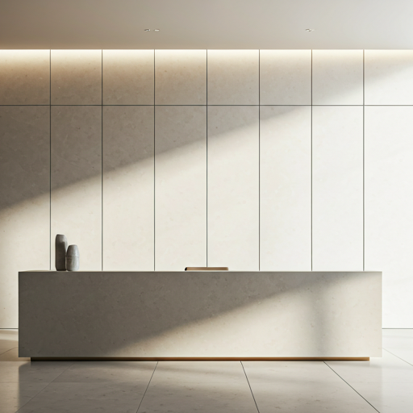
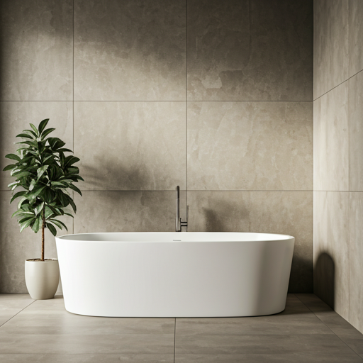
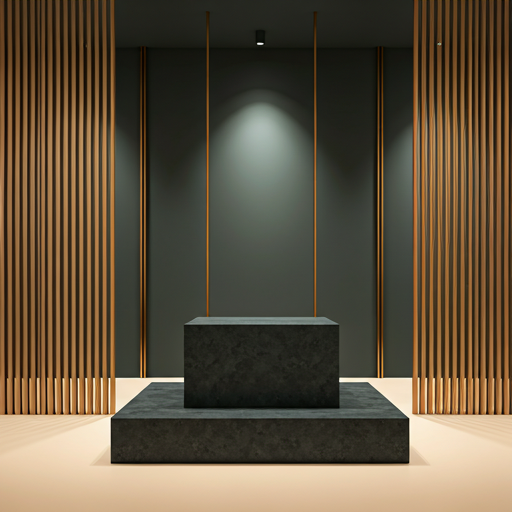

مشاريع تتحدث عن نفسها
حيث يلتقي الضوء بالمساحة. نستعرض هنا مجموعة منتقاة من المساحات التي تعكس رؤيتنا في دمج الخزف الفاخر مع العمارة الحديثة.

سكني فاخر • البدع
فيلا النور، البدع
استخدام تشكيلة 'ترافرتين' لخلق مساحات متصلة بصرياً، تعزز من دخول الضوء الطبيعي وتعكس هدوء البيئة المحيطة.
قراءة القصة arrow_left
تجاري • مدينة الكويت
برج الحمراء المكتبي
استخدام: تشكيلة 'ماركوينا' و 'كلكتا'

ضيافة • السالمية
فندق سيمفوني ستايل
استخدام: تشكيلة 'أونيكس' المضيئة
سكني • الشويخ
ديوان الشويخ
استخدام: تشكيلة 'بازلت' الخارجية
مؤسسي • العاصمة
المقر الرئيسي للبنك
استخدام: ألواح 'ترافرتينو' الكبيرة

ضيافة • الخيران
منتجع الخيران الصحي
استخدام: تشكيلة 'زين' المقاومة للرطوبة

تجاري • الأفنيوز
بوتيك أزياء فاخر
استخدام: تشكيلة 'تيرازو' المعاصرة
150+
مشروع منجز
12
دولة حول العالم
40+
عام من التميز
هل لديك مشروع؟
فريقنا من المعماريين وخبراء الخزف مستعد لتحويل رؤيتك إلى واقع ملموس.
تواصل مع فريق المعماريين